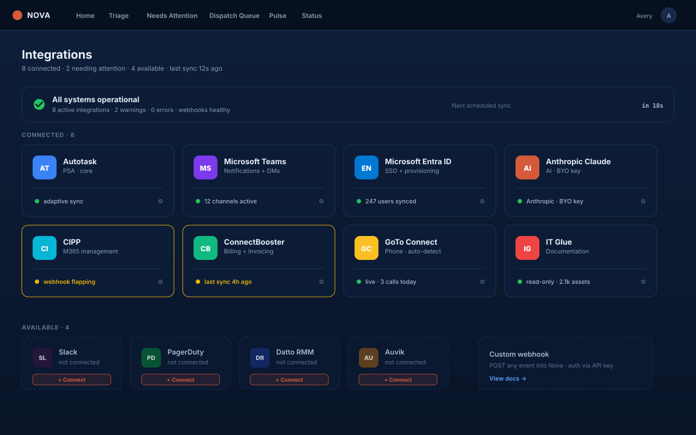

Nova lives on top of the systems your MSP already runs. We don't ship custom fields into your PSA, we don't replace your communication stack, and we don't ask you to switch identity providers. Click in, plug in, go.

The core integration. Nova polls Autotask continuously — fast during business hours, quieter overnight — for new and updated tickets, classifies them, and writes the dispatcher's accepted classification back to the ticket — priority, queue, type, issue and category. No custom fields. No PSA add-ons.
Pulse cards — briefings, P1 alerts, end-of-day summaries — post to your dispatch channel. Per-tech status checks land as direct messages.
Single sign-on for Nova staff and the client portal. Staff sign in with their Microsoft account, under your existing sign-in policies. Access is set by role inside Nova — for example, dispatcher or tech.
Anthropic powers Nova's classification, briefings, and end-of-day reports out of the box. You bring your own API key, billed directly by Anthropic. Anthropic's commercial terms don't use your API data to train models.
For MSPs with existing OpenAI relationships or compliance constraints. Any AI process (triage, briefings, summaries) can run on OpenAI instead of Anthropic. Same prompts, your choice of provider.
Inbound and outbound calls auto-matched to Autotask companies and contacts. Live call state flows into the Status Board so dispatch sees who a tech is on the phone with, in real time. Call recordings + AI-generated summaries sync to Nova; matching tickets are proposed automatically with one-click linking. Read the Call Linking deep dive →
Pulls license assignments and MFA status into Nova, and feeds the seat audit that compares Microsoft 365 licenses with your Autotask contracts.
Surface invoice + payment status inside the client portal. Clients see their billing history and pay invoices inside the portal, with the same sign-in.
Read-only accounting connection that feeds the finance reports.
Compares Pax8 subscription costs with what your Autotask contracts bill.
Patching and device health, including in monthly client reviews.
Documentation insights such as upcoming renewals, in client reviews.
Uptime status for your team, and an uptime page in the client portal.
Bring your existing reviews and history into Nova's CSAT reports.
Text broadcasts to clients, and quick texts from a ticket.
For MSPs running on Slack instead of Teams.
RMM context, such as alerts and device health, feeding triage.
Need an integration that's not on this list? Tell us. Customer asks shape the roadmap.
Tell us your stack — we'll tell you exactly what plugs in on day one and what's two weeks out.